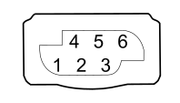

K002 HEADLAMP ALIGNMENT CORRECTOR REAR POTENTIOMETER (CAF) (REAR SERVICE BRAID)
- Path
- Electrical equipment > 3 CONNECTORS > K SENSORS AND SENDER UNITS > K002 HEADLAMP ALIGNMENT CORRECTOR REAR POTENTIOMETER (CAF) > K002 HEADLAMP ALIGNMENT CORRECTOR REAR POTENTIOMETER (CAF) (REAR SERVICE BRAID)
- Kind
- connector pinout (pin -> wire colour -> other end)
- Applies to
- all engines; all production periods; only with equipment: XENON GAS HEADLAMPS
- Interactive page
- https://sloeber94.github.io/elrnDB-fCrm/en/#/194005120
Applies to: all engines; all production periods; only with equipment: XENON GAS HEADLAMPS

Wiring | Colour |
|---|---|
NERO (black) |
Pin | Cable | Destination | |||
|---|---|---|---|---|---|
Sec.. | Colour | Node | Connect. | Pin | |
1 | 0,35 | NR (black with red stripe) | 3 | ||
4 | 0,35 | HV (grey with green stripe) | 2 | ||
5 | 0,35 | GV (yellow with green stripe) | 1 | ||